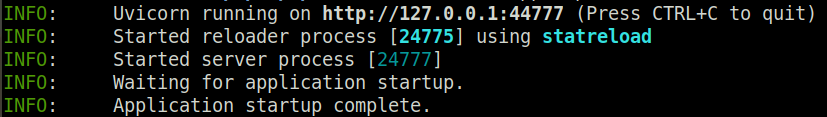
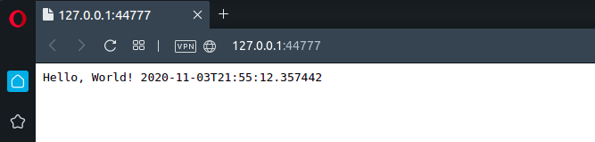

Getting started with BlackSheep¶
This tutorial explains how to create and start a minimal BlackSheep web application. It provides an overview of the following topics:
- Creating a web application from scratch.
- Running the web application.
- Configuring routes.
- Handling parameters.
- Handling responses.
Requirements¶
- Python version >= 3.10 (3.8 and 3.9 are supported but not recommended for this tutorial)
- Ensure the Python executable is included in the
$PATHenvironment variable. (tip: if you install Python on Windows using the official installer, enable the checkbox to update your$PATHvariable during the installation)
Preparing a development environment¶
- Create a folder in your desired location, open a terminal, and navigate to it.
- Create a virtual environment using the following command:
- Activate the virtual environment:
BlackSheep is an ASGI web framework,
so it requires an ASGI HTTP server like Uvicorn,
Hypercorn, or
Granian. Install uvicorn and
blacksheep for this tutorial:
Creating and running a web application¶
Create a file server.py, and paste the following contents into it:
from datetime import datetime
from blacksheep import Application, get
app = Application()
@get("/")
def home():
return f"Hello, World! {datetime.now().isoformat()}"
Use the command below to start the application using port 44777, with
automatic reload on file change:
The terminal should display information like in the picture below:

Open a web browser and navigate to http://127.0.0.1:44777. The web browser will display the text answer from the web application:

Configuring routes¶
The current code configures a request handler for the HTTP GET
method at the application's root path: "/". Notice how a function decorator registers the home function as a request handler:
This means that whenever a HTTP GET request is received at the root URL of
the application (e.g. http://127.0.0.1:44777), the home function is used to
handle the request and produce a response.
Register more request handlers to handle more routes and
HTTP methods.
Update your server.py file to contain the following code, which includes
two request handlers: one for HTTP GET /, and one for HTTP POST /.
from blacksheep import Application, get, post
app = Application()
@get("/")
def home(request):
return "GET Example"
@post("/")
def post_example(request):
return "POST Example"
Auto reload.
Thanks to uvicorn's auto reload feature (used with --reload argument),
when the server.py file is updated, the application is automatically reloaded.
This is extremely useful during development.
Navigate again to http://127.0.0.1:44777, it should display the text:
"GET Example".
To verify that the post_example request handler is handling POST requests,
make a POST HTTP request at the server's address.
For example, using curl or PowerShell:
Info
The application automatically handles requests for any path that is not handled
by the router, returning an HTTP 404 Not Found response and producing HTTP
500 Internal Server Error responses in case of unhandled exceptions happening
during code execution.
Handling route parameters¶
So far the examples only showed request handlers that didn't use any input parameter. To define a request handler that uses a route parameter, define dynamic routes using the following syntax:
Route parameters and function parameters are bound by matching names.
Add the fragment of code above to server.py and navigate to
http://127.0.0.1:44777/World.
A route can contain several named parameters, separated by slashes, and dynamic fragments mixed with static fragments:
@get("/{one}/{two}/{three}")
def multiple_parameters(one, two, three):
return f"1: {one}, 2: {two}, 3: {three}!"
@get("/movies/{movie_id}/actors/{actor_id}")
def mix(movie_id, actor_id):
...
Route parameters are by default treated as strings, but BlackSheep supports
automatic parsing of values when function arguments are annotated using
built-in typing annotations.
For example, to define a route that handles integer route parameters and
returns HTTP 400 Bad Request for invalid values, it is sufficient to decorate
the function argument this way:
By default, route parameters are treated as strings. However, BlackSheep
supports automatic value parsing when function arguments are annotated with
type annotations. For instance,
to define a route that handles integer parameters and returns an HTTP 400 Bad Request
for invalid values, it is sufficient to decorate the function argument as
follows:
@get("/lucky-number/{number}")
def only_numbers_here(number: int):
return f"Lucky number: {number}\n"
Several built-in types are handled automatically, like str, bool, int,
float, uuid.UUID, datetime.date, datetime.datetime, list[T], set[T].
Handling query string parameters¶
BlackSheep can handle query string parameters automatically. Add this new fragment to your application:
Then navigate to http://localhost:44777/query?name=World.
Request handlers can work with various query strings, and query string parameters also support lists.
@get("/query-list")
def greetings_many(name: list[str]):
return f"Hello, {', '.join(name)}!"
# example:
# http://localhost:44777/query-list?name=Charlie&name=Lisa&name=Snoopy
# --> Hello, Charlie, Lisa, Snoopy!
Every handler can have many input parameters from different sources: request headers, cookies, query, route, request body, and configured application services. These are treated in more detail in the dedicated page about Binders.
Accessing the request object¶
To access the HTTP Request object directly, add a parameter called "request" to the signature of a request handler (type annotation is optional):
from blacksheep import Request
@get("/request-object")
def request_object(request: Request):
# the request object exposes methods to read headers, cookies,
# body, route parameters
...
Info
You can name the request parameter any way you like (e.g. request, req, foo, etc.),
as long as you keep the correct type annotation (blacksheep.Request).
Handling responses¶
Generally, request handlers in BlackSheep must return an instance of
blacksheep.messages.Response class. The framework offers several functions
for generating responses for various use cases, which are defined in the
blacksheep.server.responses namespace.
The following example demonstrates how to serve a JSON response using a class
defined with dataclass.
Replace the contents of server.py with the following code:
from dataclasses import dataclass
from uuid import UUID, uuid4
from blacksheep import Application, get, json
@dataclass
class Cat:
id: UUID
name: str
active: bool
app = Application()
@get("/api/cats")
def get_cats():
return json(
[
Cat(uuid4(), "Lampo", True),
Cat(uuid4(), "Milady", True),
Cat(uuid4(), "Meatball", True),
Cat(uuid4(), "Pilou", True),
]
)
Navigate to http://127.0.0.1:44777/api/cats to view the result, which will look like this:
[{"id":"9dea0080-0e92-46e0-b090-55454c23d37f","name":"Lampo","active":true},
{"id":"3ce81720-de11-41b4-bad4-6fa63e00403d","name":"Milady","active":true},
{"id":"2981d8a4-52c3-4ed9-96b8-30fafe62bc47","name":"Meatball","active":true},
{"id":"b697358e-0f74-4449-840a-32c8db839244","name":"Pilou","active":true}]
Notice how the json function creates an instance of Response with content
serialized into a JSON string.
from blacksheep import json
response = json({"example": 1})
response.content
<blacksheep.contents.Content object at 0x7f4ebcf30720>
response.content.body
b'{"example":1}'
response.content.length
13
Tip
Try also the pretty_json function in blacksheep.server.responses, which
returns indented JSON.
For more granular control, it is possible to use the blacksheep.messages.Response
class directly (read blacksheep.server.responses module for examples), and
it is possible to modify the response before returning it to the client.
For instance, to set a response header:
@get("/api/cats")
def get_cats():
response = json(
[
Cat(uuid4(), "Lampo", True),
Cat(uuid4(), "Milady", True),
Cat(uuid4(), "Meatball", True),
Cat(uuid4(), "Pilou", True),
]
)
response.add_header(b"X-Foo", b"Foo!")
return response
User-defined request handlers can return arbitrary objects, which will be automatically converted to JSON responses.
@get("/api/cats")
def get_cats() -> list[Cat]:
return [
Cat(uuid4(), "Lampo", True),
Cat(uuid4(), "Milady", True),
Cat(uuid4(), "Meatball", True),
Cat(uuid4(), "Pilou", True),
]
The rationale behind this design choice is that JSON is the most widely used format for serializing objects today. This feature helps reduce code verbosity while making the return type explicit. Furthermore, it enables the automatic generation of OpenAPI documentation to describe the response body.
Asynchronous request handlers¶
The examples so far have demonstrated synchronous request handlers. To create
asynchronous request handlers, use async functions:
@get("/api/movies")
async def get_movies():
# ... do something async (example)
movies = await movies_provider.get_movies()
return json(movies)
Asynchronous code is described more in other sections of the documentation.
Summary¶
This tutorial covered the basics of creating a BlackSheep application. The general concepts introduced here are applicable to any web framework:
- server-side routing
- handling query strings and route parameters
- handling requests and responses
The next page will explore a more advanced scenario, including server-side rendering of HTML views, serving static files, and more features.
Last modified on: 2025-06-08 19:10:51